A fault identification and classification algorithm for
photovoltaic systems
Chen, Yijia & Liu, Yutong
National Junior College
Abstract
With the wide application of photovoltaic
(PV) systems, their work performance and
maintenance are increasingly concerned. The work performance of the PV systems is affected by
faults in the PV arrays and faults caused by external environmental circumstances. The current
method of scheduled maintenance proves to be ineffective in fault classification. To distinguish
the multiple types of faults, condition-based maintenance has been introduced, which involves
the adoption of fault detection algorithms. An easy and fast fault classification algorithm based
on real-time current and voltage inputs is presented in this paper to classify common faults in PV
systems such as grounding fault and line-line fault. In order to develop the algorithm, an artificial
neural network (ANN) is employed. Inputs and targets are obtained by simulating solar modules
and outdoor conditions in Simulink. The validity of the algorithm is verified using MatLab tools.
The same type of algorithm can be applied to a broader context. By training ANN using different
input and target values in different PV systems, the algorithm generated will be able to classify
types of faults in these systems as well.
Key words: PV systems, condition-based maintenance, artificial neural network
Introduction
(a) Background
With the widespread use[1] of photovoltaic (PV) systems[2], their work performance and
maintenance (measured by output power) are increasingly of concern to power stations and
building management companies. Work performance of the PV systems is affected by the faults
in the PV arrays and environmental factors.
1) Faults in PV arrays[3]
a) Ground (GL) fault.
b) Line-line (LL) fault.
2) External environmental circumstances include partial shading, temperature and
irradiance.
(b) Motivation and aim
Currently, scheduled checkups and maintenance are adopted by most companies to ensure the
expected work performance of PV systems, which is indicated by its power output. However,
such maintenance is ineffective because the causes for the abnormal work performance (lower or
zero power output) are often unclear[4]. Recently, condition-based maintenance1 is introduced to
better distinguish the causes of different faults, and therefore more able to accurately repair
defects found in PV systems. This involves the adoption of a fault detection method. Therefore,
we aim to create a fault classification algorithm in MatLab.
Methodology
Simulink[5] is used throughout our research. Firstly, temperature and irradiance on one PV
module working in healthy condition (i.e. without any fault) are varied to observe how the power
generated from the PV module is affected by external environmental conditions. The results can
be seen in ‘appendix [6].’ Secondly, a simulation of a PV array under constant environmental
conditions is run and various GL and LL faults are made to occur on different parts of the PV
1 Condition-based maintenance (CBM) is a maintenance strategy that monitors the actual condition of an asset to
decide what maintenance needs to be done. CBM dictates that maintenance should only be performed when certain
indicators show signs of decreasing performance or upcoming failure.
array. V-t and I-t graphs are plotted and patterns that are specific to a particular fault are
recognised. However, this method of fault identification has limitations as explained[7] in
‘appendix.’
Thirdly, in view of the limitations of the abovementioned method, an algorithm using Neural
Network Pattern Recognition tools (nprtool) is created to identify and classify faults in a PV
array.[8] Different faults are simulated in the PV array and V, I values are obtained as well. Both
inputs (V and I values) and targets (representations of particular types of fault) are stored in an
excel sheet as our database[9].
Results analysis
Artificial neural network (ANN)[10] performs a mapping from an input space to an output space.
Our fault classification algorithm utilises current and voltage values as inputs and binary
representations[9] as targets which have been manually assigned to each specific case of fault.
Figure 1. Training, testing and validation samples
With reference to Figure 1, all samples are divided into three sets: 70% of them are used for
training (learning), 15% for testing and 15% for validation. As testing samples are separated
from the training samples, testing assesses learning outcome of the neural network during and
after training independently. Validation is used to measure network generalisation, and to halt
training when generalisation reaches the optimal level. This is achieved by monitoring the error
on the validation set during the training process. (Harsha Bommana, 2019) The validation error
normally decreases during the initial phase of training, as does the training set error. However,
when the network begins to overfit the data, the error on the validation set begins to rise. When
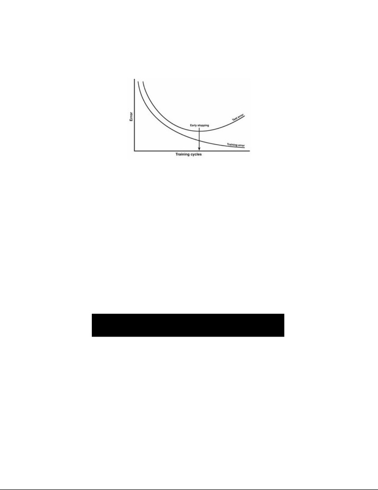
the validation error increases for a specified number of iterations, the training is stopped, and the
weights and biases at the minimum of the validation error are returned. (N.A., 2017)
Figure 2. Test data and early stopping
With reference to Figure 2, the training process is halted at the iteration where there is minimum
test error.
One of the most important steps in creating a good algorithm is selecting the number of hidden
neurons. More neurons in the hidden layer (i.e. hidden neurons) means more precise calculation
of internal parameter values, which allows the neural network to perform better in predicting
faults. However, more precise calculation requires more time and memory of the computer to
process the inputs. The below mathematical formula gives the approximate value of the number
of hidden neurons:
,
where Nhidden layer refers to the number of neurons in the hidden layer, Ninput refers to the number of
inputs, Noutput refers to the number of outputs, and Ntraining samples refers to the number of training
samples.
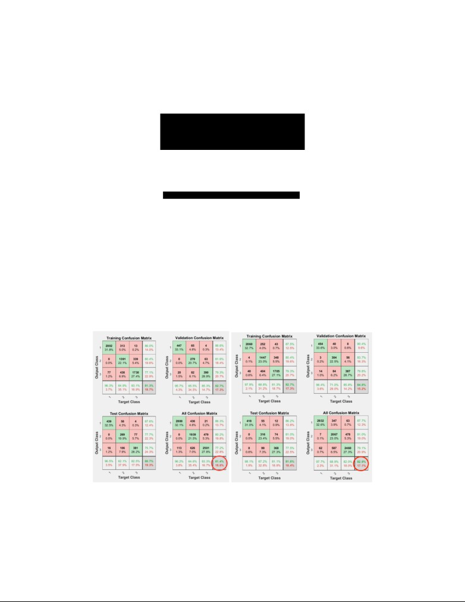
In our algorithm, there are two inputs, which are current and voltage, three outputs, which are
healthy, GL and LL fault conditions, and 9003 training samples. Substituting Ninput, Noutput and
Ntraining samples into the equation, we get:
Therefore,
,
which means the number of hidden neurons can range from 1 to 108.
When there is only one hidden neuron, up to 51.8% of the conditions are correctly predicted after
training, which means the accuracy of the algorithm is 51.8%. When there are two hidden
neurons, accuracy rises to 53.0%. Three hidden neurons gives an accuracy higher than 70.0%.
When the number of hidden neurons is further increased to four, a much higher accuracy of
81.4% is achieved.
Figure 3 and 4. Confusion matrices of training and testing results when four neurons (left) and
five neurons (right) are selected in the hidden layer.
With reference to Figure 3 and 4, when the number of hidden neurons increases from four to
five, the performance of the algorithm in terms of accuracy of fault prediction increases from
81.4% to 82.9%, which does not significantly increase the accuracy of our fault classification
algorithm. As the number of hidden neurons keeps increasing, the performance of the algorithm
remains almost unchanged, while the time taken to run the algorithm increases significantly.
Hence, any further increase in the number of hidden neurons, and thus the resulting negligible
improvement in accuracy of fault prediction, is not worth the time prolonged in running the
algorithm. With this consideration in mind, only four neurons are chosen in the hidden layer.
Figure 5. A section of the report showing training functions
With reference to Figure 5, upon finishing training the algorithm, a report consisting of MatLab
code is saved. In the report, not only the number of hidden neurons can be changed, but also
training functions. Various training functions including “trainlm”, “trainbr” and “trainscg” have
their respective advantages. “Trainlm” involves the shortest training time but cannot be used in
complex algorithms. “Trainbr” takes longer to run but may be better for challenging problems.
“Trainscg” uses less memory than the other two training functions. In our algorithm, “trainbr”
gives the best result.
Discussion
(a) Risk assessment
Our entire research will be conducted in MatLab on the computer. No hazardous chemicals,
activities, or devices will be used. No safety precautions or procedures are needed either.
(b) Limitations
Firstly, this algorithm is not universally applicable for fault prediction in all other PV arrays.
The algorithm is established based on the unique characteristics of our array2. Thus, given a
different PV array, a different database of V, I values and binary representations has to be
redesigned[11].
Secondly, there is a limit to the highest possible accuracy in fault prediction. When only four
hidden neurons are selected, the accuracy cannot be increased beyond 82%. Although increasing
the number of hidden neurons can still minimally increase the accuracy, this fails to align with
the practical concern that the time taken for running the algorithm should not be so long that the
algorithm gives delayed classification results, affecting maintenance operations. Furthermore,
even if the number of hidden neurons increases to its upper limit3, the algorithm is still unable to
achieve the desired accuracy of over 99%, which is much higher than the highest accuracy
possible for our algorithm. Our algorithm, which only uses the raw values of V and I, is less
accurate in fault prediction as compared to more advanced fault prediction methods.
(c) Future work
The algorithm fails to hit the desired accuracy, which is over 99%. Considering the trade-off
among cost, time and accuracy, the current accuracy can be further improved. To achieve this,
the total error should be at the minimum, which requires a balance between low variance4 and
low bias5 of the algorithm, where the sum of the bias2 and the variance is at the minimum.[12]
This can be achieved by the following methods. (Sunil Ray, 2015)
2 Unique characteristics of our array refer to the number of PV modules and/or the way of connection of various
electrical components in the PV array.
3The upper limit is 108, as calculated in “results analysis.”
4 Variance refers to the algorithm's sensitivity to specific sets of training data.
5 Bias is the difference between the model's expected predictions and the true values. Bias occurs when an algorithm
has limited flexibility to learn the true signal from the dataset.
Method 1: Add more data. Presence of more data results in more accurate algorithms, since
increasing the size of training data allows the algorithm to establish a more accurate functional
relationship between input space and output space.
Method 2: Treat outliers. The unwanted presence of outlier values in the training data often
reduces the accuracy of a model or leads to a biased model. This leads to inaccurate predictions,
because the functional relationship derived from the abnormal input-target datasets will deviate
from that derived from the normal input-target datasets. In such cases, outliers can be treated
separately or deleted, both reducing the variance on the algorithm.
Method 3. Feature engineering. Feature engineering helps to extract more information from
existing data. New information is extracted that have a higher ability to explain the patterns in
the training data.
Method 4. Algorithm tuning. The objective of parameter tuning is to find the hyperparameters’
optimal values[13]. When the hyperparameters are not at optimal values, the problem of
overfitting or underfitting will occur. A powerful preventative measure to reduce overfitting is
cross validation, where multiple mini train-test splits are generated from the initial training data.
As a result, hyperparameters are tuned with only the original training set, which allows the test
set to be isolated from the training set.
The above-mentioned methods were not done because they are not within the capability of the
software that we are currently using, and because of time constraints. We will explore other
programming tools in the future to shorten the time for training the algorithm, to treat outliers
and to actualise feature engineering and algorithm tuning.
Conclusion
This fault identification and classification algorithm has several benefits. Firstly, it is able to
monitor, track and report the current working condition of a PV array so that any fault happening
in the PV array can be detected, classified and fixed in time. Secondly, as one type of
condition-based maintenance, the algorithm saves time and labour cost than scheduled checkups.
The procedure of the fault identification and classification algorithm can be summarized as
follows. When real-time voltage and current values are fed into the algorithm, the algorithm
maps the input to the output using the functional relationship described by the internal
parameters. The output generated will clearly indicate one specific case[9], and therefore one type
of working condition[11].
Bibliography
Harsha Bommana. (2019). Generalization in Neural Networks. Deep Medium.
N.A. (2017). SANN Overviews - Network Generalization. Statistica Help.
N.A. (N.D.) What is the Bias-Variance Tradeoff? ELITE Data Science.
N.A. (N.D.) The 5 Levels of Machine Learning Iteration. ELITE Data Science.
Sunil Ray. (2015). 8 Proven Ways for improving the “Accuracy” of a Machine Learning Model.
Analytics Vidhya.
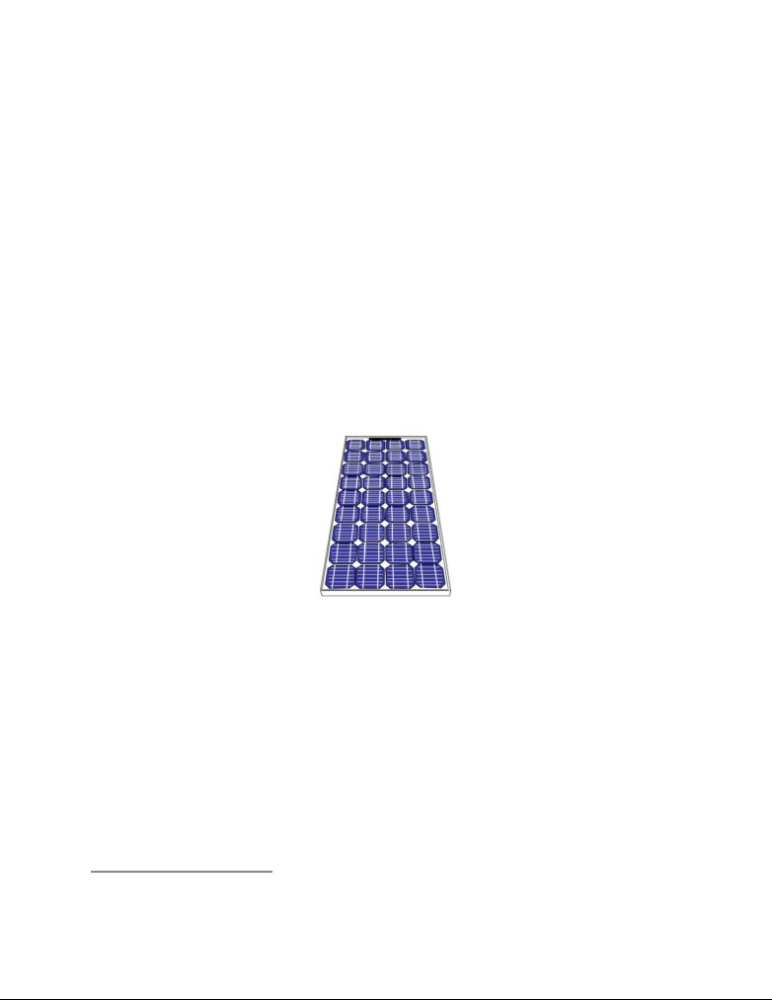
Appendix
[1] The widespread use of PV systems. Photovoltaic (PV) systems have gained great popularity
since the 1970s for its environmental benefits. PV systems utilise solar energy to generate
electricity, which is a cleaner source of energy for power generation as compared to conventional
means such as combustion of fossil fuels. It is also more accessible to remote regions where
conventional grid access is impractical due to the long distance over which the transmission lines
have to be constructed. In Singapore, rooftop solar PV systems have already been installed at
several local waterworks. By 2021, enough solar energy will be provided to power the equivalent
of 15,500 four-room HDB flats for one year. (N.A., 2019)
[2] A brief introduction to PV arrays
Figure 6. A typical bulk silicon PV array used in outdoor remote power applications.
With reference to Figure 6, a PV module consists of a number of interconnected solar
cells6 encapsulated into a single, long-lasting, stable unit. A PV array is a linked collection of PV
modules.
[3] Faults in PV arrays
a) Ground (GL) fault. GL fault occurs when one of the cables connecting the PV
modules touches the ground. It is usually caused by insulation breakdown.
6 A solar cell, or photovoltaic cell, is an electrical device that converts the energy of light directly into electricity by
the photovoltaic effect, which is a physical and chemical phenomenon.
b) Line-line (LL) fault. LL fault occurs when two cables connecting the PV modules
accidentally touch each other. This happens because the two PV modules in a PV
array are in close proximity.
[4] The challenge faced by maintenance of PV systems: unclear causes for the abnormal work
performance (lower or zero power output). The information available from the PV systems is
limited to current and voltage only, which is insufficient to attribute the abnormal work
performance to any specific cause. The challenge in distinguishing the causes of abnormal work
performance (faults in the PV arrays and environmental factors) results in substantial labour and
financial resources employed to ascertain the exact cause and the exact location where the cause
occurs on a huge solar panel.
[5] The function of Simulink. Simulink simulates the actual working conditions of PV systems,
where external environmental conditions vary and faults in PV arrays can be present or absent.
Voltage (V), current (I) and power (P) values can be obtained each time we run the Simulink.
[6] Relationships between external environmental conditions and maximum achievable power
from a PV module. After running the simulation multiple times with different temperature and
irradiance values, graphs showing relationships between external environmental conditions and
maximum achievable power from a PV module are obtained.
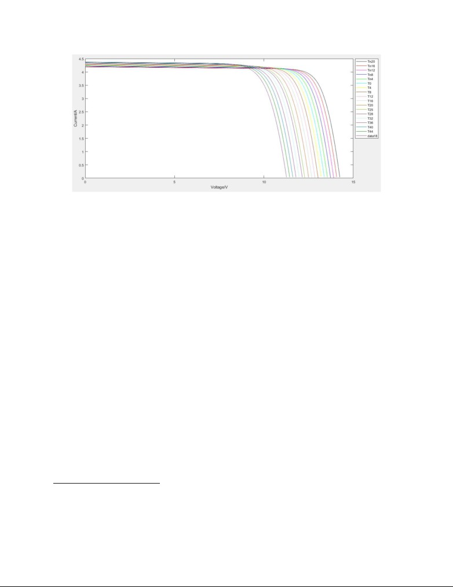
Figure 7. I-V graph of one PV module receiving constant irradiance7 (500 Wm-2) at varying
temperatures
8
With reference to Figure 7, when the temperature increases, short-circuit current
(ISC, indicated
9
in the graph as intercepts on x-axis) increases and open-circuit voltage
(VOC, indicated in the
graph as intercepts on y-axis) decreases. However, the increase in ISC is smaller than the decrease
in VOC , resulting in an overall decrease in magnitude of achievable power. This is because an
increase in temperature will increase the resistance inside semiconductor materials, hindering the
movement of excited electrons and holes. As a result, power output is lower as temperature rises.
7 The solar irradiance is the output of light energy from the entire disk of the Sun, measured at the Earth. (NASA)
8 The short-circuit current is the current through the solar cell when the voltage across the solar cell is zero (i.e.,
when the solar cell is short circuited) (pveducation.org)
9 The open-circuit voltage, VOC, is the maximum voltage available from a solar cell, and this occurs at zero current.
(pveducation.org)
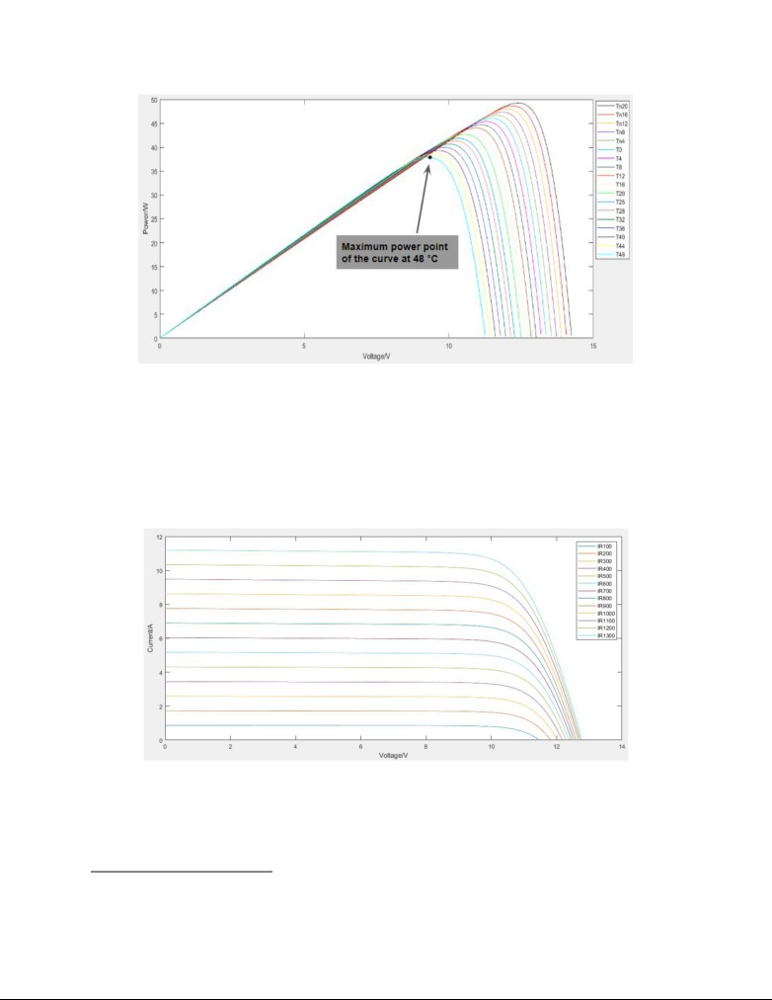
Figure 8. P-V graph of one PV module receiving constant irradiance (500 Wm-2) at varying
temperatures
With reference to Figure 8, the maximum power point (MPP)10 decreases with increasing
temperature. This tallies with our analysis above.
Figure 9. I-V graph of one PV module at constant temperature (25 °C) receiving varying
irradiance
10 Maximum power point (MPP): The point on a power curve that has the highest value of the product of its
corresponding voltage and current, or the highest power output. (pveducation.org)
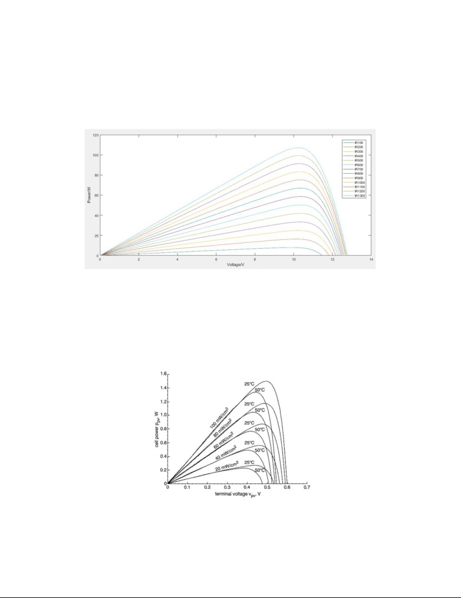
With reference to Figure 9, both ISC and VOC increase when solar irradiance increases, causing
the MPP to increase. This is because when a PV module receives higher solar irradiance, it
absorbs more photons and excites electrons at a faster rate in the semiconductor material at the
P-N junction. As a result, power output increases.
Figure 10. P-V graph of one PV module at constant temperature (25 °C) receiving varying
irradiances
With reference to Figure 10, the MPP increases with increasing irradiance. This also tallies with
our analysis above.
Figure 11. Combined effect of temperature and irradiance on MPP (Safak Saglam, 2019)
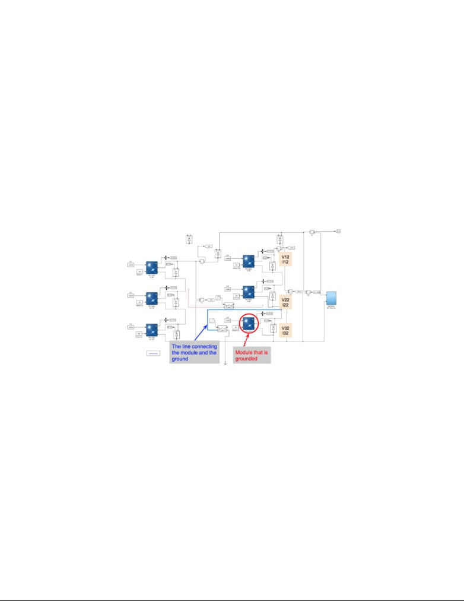
In conclusion, the MPP of a PV module increases with increasing irradiance and decreasing
temperature, as shown in Figure 11.
[7] Graphs of patterns that may be specific to a particular fault. A simulation of a PV array
consisting of six PV modules is used. With constant temperature and irradiance, the simulation is
run for four seconds and various GL and LL faults are made to occur on different parts of the PV
array at the third second. Graphs of output voltage and current are plotted. On the graph, patterns
that are specific to a particular fault are recognised. The fault is only made to occur at the third
second because drastic changes in V and I values depicted in the graph before and after the fault
happens can help us identify the particular fault type.
Figure 12. When GL fault occurs in a PV array
Figure 12 illustrates a typical PV array consisting of six PV modules, one of which is connected
to the ground. The temperature and irradiance are fixed at 30°C and 1000Wm-2 respectively.
Since GL fault is made to occur in the series on the right, it is only necessary to analyse the V-t
and I-t graphs of the three PV modules in the series on the right for fault identification purpose.
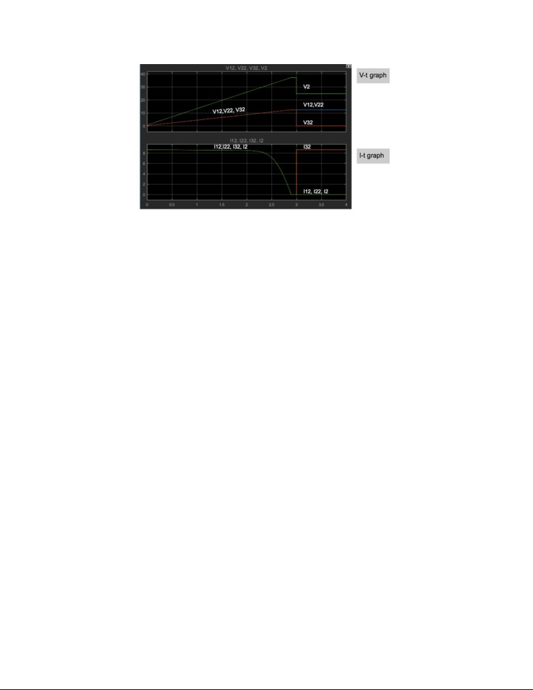
Figure 13. V-t and I-t graphs of the three PV modules in the series on the right
With reference to Figure 13, the simulation is run for four seconds. At the third second, GL fault
is made to occur on the PV module circled. The upper graph shows four lines, representing the
voltage output (V12, V22, V32) of each PV module and the resultant output (V2). In particular,
V32 represents the voltage output of the grounded module. At the third second, the voltage
generated across the faulty module is reduced to zero because once the module is connected to
the ground: The potential difference across the circled module will be equal to the potential of
the ground which is zero. And the other two modules continue to generate the same voltage
output as before. In the lower graph, current output of each PV module and the resultant current
(I2) are shown. At the third second, the bottom right module is grounded, and the current flowing
through that module is separated from the current in the series that connects the two modules
above. As a result, the current through the faulty module, which is indicated as I32, is no longer
equal to the value of I2, I12 and I22, but rather spikes to the maximum due to the negligible
resistance of the wire through which the current flows from the faulty module to the ground.
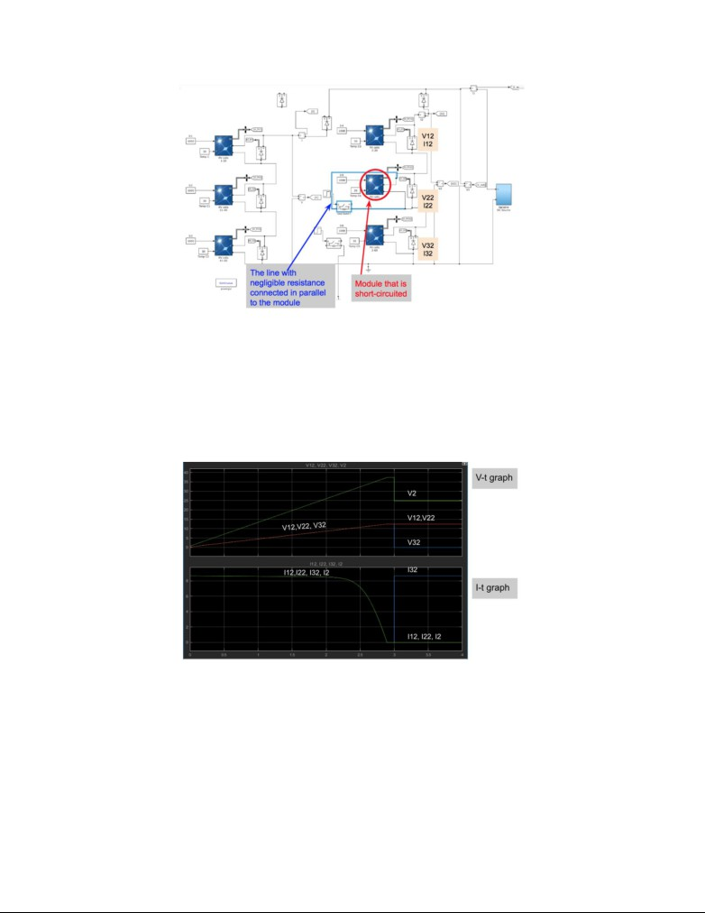
Figure 14. When LL fault occurs in a PV array
Figure 14 shows a PV array consisting of six PV modules. The PV module circled is
short-circuited. The temperature and irradiance are fixed at 30°C and 1000Wm-2 respectively.
Similar V-t and I-t graphs of the PV modules in the series on the right are shown in Figure 11.
Figure 15. V-t and I-t graphs of the three PV modules in the series on the right
With reference to Figure 15, the simulation is run for four seconds and LL fault is made to
happen at the third second. When LL fault happens, the measured voltage is immediately
reduced to zero because the potential difference across the line with negligible resistance is zero.
As the circled module is short-circuited, the current in the series flows through the line, which is
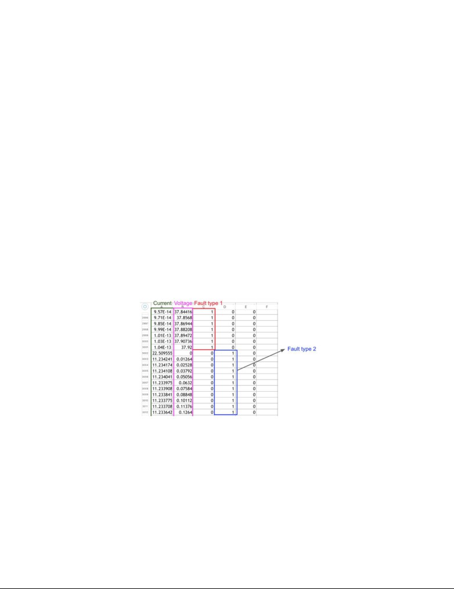
an ohmic conductor, rather than the circled PV module, which is a PV semiconductor. Therefore
the current through the faulty module spikes to the maximum.
However, it is not hard to see that Figure 13 and Figure 15 give exactly the same graph though
different faults are made to happen. By mere observation of V-t and I-t graphs, it is clear to see
whether GL fault or LL fault occurs, but not to distinguish which fault it is exactly. In order to
identify which fault has occurred, more advanced tools have to be adopted.
[8] In this method, unlike the second simulation, the simulation is run for three seconds only,
with the fault being made to occur at the start. The timing at which the fault is made to occur in
this method is different from that outlined in the previous method, because the input data fed into
the algorithm should only comprise of the V and I values under faulty conditions, instead of
those under both healthy and faulty conditions.
[9] Illustration of the database
Figure 16. A section of the database where inputs (V and I values) and targets (particular types of
fault) are stored
With reference to Figure 16, current values are recorded in the first column and voltage values
are recorded in the second column. The third column to the fifth column contain binary
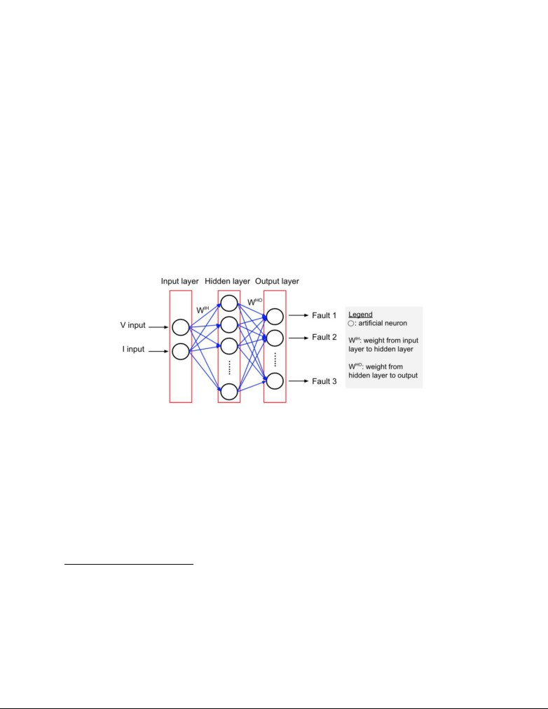
representations11 that are targets of each set of current and voltage values. Each column recording
the targets represents a particular condition (i.e. healthy condition, a specific case of GL fault and
a specific case of LL fault). Character “1” present in the column means the fault corresponding
to that column occurs, while character “0” present in the column means the fault corresponding
to that column does not occur. As shown on Figure 16, a small database12 containing V, I values
and targets is created for presentation purpose. In a bid to train the algorithm, current and voltage
values are fed into the neural network as inputs and binary representations are also keyed in as
desired targets.
[10] A brief introduction to artificial neural network
Figure 17. Illustration of how a simple artificial neural network works
An artificial neural network (ANN) is an interconnected group of nodes, inspired by a
simplification of neurons in a brain (Luke Dormehl, 2019). With reference to Figure 17, each
circular node represents an artificial neuron and a blue arrow represents a connection from the
output 13of one artificial neuron to the input of another. Here are some key definitions in ANN:
11 Binary is a base-2 number system that uses two mutually exclusive states to represent information. A binary
number is made up of elements called bits where each bit can be in one of the two possible states. Generally, we
represent them with the numerals 1 and 0.
12 This database only includes three specific cases, containing 9003 samples, 3001 for each case (i.e. healthy
condition, a specific case of GL fault and a specific case of LL fault )
13 Output of the algorithm is the result produced by the algorithm after training, when only input value is given,
which will not always be correct.
1) Input layer. Number of neurons in this layer corresponds to the number of inputs to the
neural network. Neurons in this layer only transmit signals to the following layer.
2) Hidden layer. This layer has an arbitrary number of neurons. Neurons in this layer are
involved in signal modification.
3) Output layer. The number of neurons in the output layer corresponds to the number of the
output values of the neural network.
4) Weight. This is represented in matrix and shows the strength of the connection between
units. For example, a weight that is nearly zero means changing the input will hardly
change the output. (Kailash Ahirwar, 2017)
ANN has a wide range of applications when different ANN architectures or learning methods
and rules are applied. These applications include classification, pattern matching, optimisation,
function approximation and data mining. Our algorithm is a classification algorithm that
classifies fault types into healthy, GL fault and LL fault conditions.
ANN performs a mapping from an input space to an output space. Through analysing the
instances of inputs and desired targets14 fed into the ANN, the algorithm will work out the
optimised internal parameter values that can most accurately describe the unknown functions
mapping inputs to targets. This process is known as learning or training, whereby a process
model is developed based only on observations of its input-output behavior. In the process,
values of internal parameters are adjusted to minimize the squared error between the outputs
produced by the network and the desired targets. Therefore, ANN will eventually be able to map
new inputs to outputs that are most close to the targets without prior knowledge.
For simple illustration, given sample images of individual swans and geese (input) that have
been manually labeled as “swan” or “goose” (target), the algorithm will analyse and learn
specific characteristics exclusively associated with swans and geese respectively. Successful
learning outcome will capture unknown functional relationship between the input and target.
This learning process is also known as the discovery of hidden patterns. Eventually, the
algorithm will be able to classify other images containing geese and swans based on the
14 Targets are correct output values given to the algorithm, for training purposes.
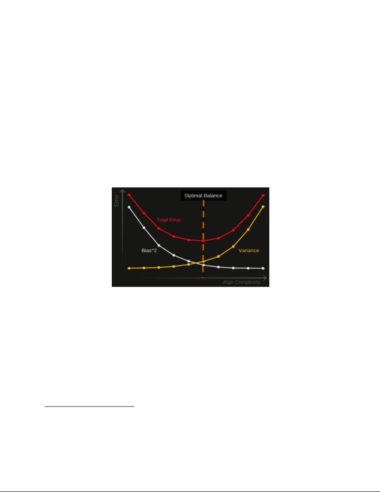
established patterns without any prior knowledge. The same mechanism applies for the algorithm
classifying various fault types in a PV system.
[11] The rationale for redesigning database. For instance, our PV array has six PV modules and a
total of fifteen different cases15 belonging to the three working conditions. When the number of
PV modules and/or the way of connection of various electrical components in the PV array
change(s), the number of cases belonging to the three working conditions, as well as V and I
values as inputs, will vary.
[12]
Figure 18. Optimal balance achieved at the lowest total error.
With reference to Figure 18, total error16 is at the minimum point when the sum of the bias2 and
the variance is the minimum. However, an algorithm with low bias tends to have high variance,
and an algorithm with low variance tends to have high bias. Hence, low bias and low variance
cannot be achieved simultaneously.
15 Fifteen cases refers to specific cases of the three working conditions, three of which is mentioned under “Results
analysis.” Among the fifteen cases, healthy condition has one case, GL fault has three cases and LL fault has eleven
cases.
16 Total Error = Bias2 + Variance + Irreducible Error. Irreducible error cannot be reduced algorithms. It can
sometimes be reduced by better data cleaning.
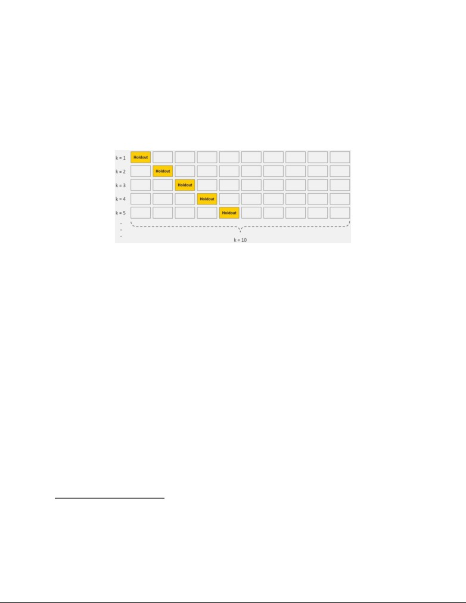
[13] Hyperparameters17 are parameters, for example, constraints, weights, number of hidden
18
layers and learning rates
, that control the learning process of the algorithm. In particular, if the
learning rate is too low, the neural network will miss the important patterns in the data, resulting
in underfitting; conversely, if the learning rate is too high, the algorithm will be too complex,
that it memorises the noise instead of the signal, resulting in overfitting. (Jason Brownlee, 2019)
Figure 19. K-fold cross-validation
A powerful preventative measure to reduce overfitting is cross validation. With reference to
Figure 19, in standard k-fold cross validation, multiple mini train-test splits are generated from
the initial training data. Data is partitioned into k subsets, called folds. The algorithm is then
iteratively trained on k-1 folds while the remaining folds are used as the test set (holdout fold).
17 A hyperparameter is different from the ‘internal parameter’. A hyperparameter is a parameter whose value is used
to control the learning process of the neural network. By contrast, an internal parameter (typically a node weight),
which describes the functional relationship between the inputs and targets, is learned in the learning process.
18 Learning rate refers to the step size, which is the amount that the weights are updated during each iteration of the
training process. It has a small positive value, often in the range between 0.0 and 1.0.
References
N.A. (2019). PUB to deploy Singapore's first large-scale floating solar panel system by 2021.
Channel News Asia.
N.A. (N.D.). Binary and Number Representation.
N.A. (2019). Short-Circuit Current. PV Education.org.
N.A. (2019). Open-Circuit Voltage. PV Education.org.
Safak Saglam. (2019). Meteorological Parameters Effects on Solar Energy Power Generation.
Luke Dormehl. (2019). What is an artificial neural network? Here’s everything you need to
know. Digital Trend.
Kailash Ahirwar. (2017). Everything you need to know about Neural Networks. Hackernoon.
Jason Brownlee. (2019). How to Configure the Learning Rate When Training Deep Learning
Neural Networks. Deep learning performance.